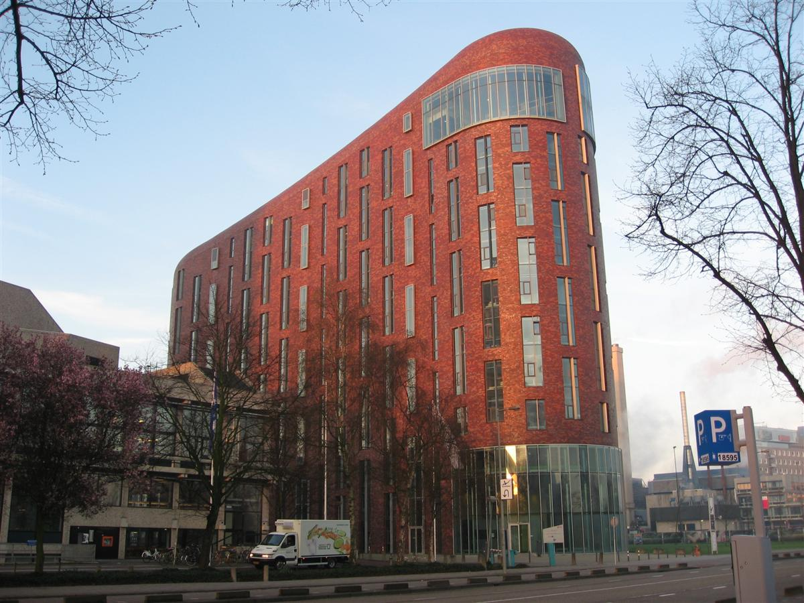

Sportkunde
Wat ging er goed op de opleiding en wat kon eventueel beter?

Bij het begin van deze opleiding had ik veel zorgen en dacht ik dat het te moeilijk zou zijn. Dit kwam omdat ik eerder een andere HBO-opleiding had gedaan en die vond ik erg lastig. Daarom begon ik deze opleiding met veel stress.
Gelukkig bleek al snel dat ik deze opleiding echt leuk vind. De vakken en de manier van lesgeven passen goed bij me en ik ben enthousiast bezig met mijn studie.
Toch merk ik dat mijn motivatie soms een probleem is. Soms heb ik weinig zin om aan taken te beginnen en dat vind ik lastig. Hier wil ik graag aan werken, omdat ik weet dat het me zal helpen om beter te presteren en meer uit mijn opleiding te halen.